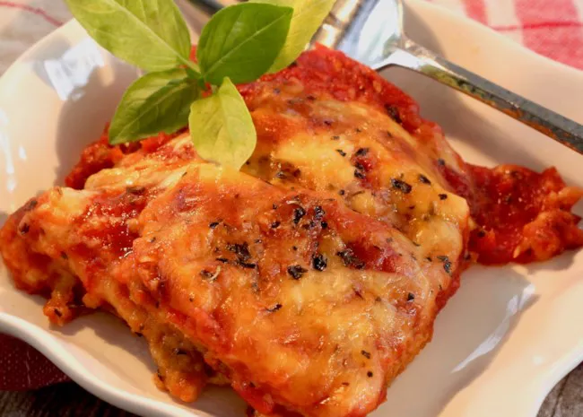

The classic combination of cheesy, herb-infused tomato sauce and crisp, oven-baked eggplant never gets old.
Easy eggplant Parmesan recipe gets high marks in ease and flavor from our community of home cooks.
Use straightforward pantry ingredients to create Italian-inspired magic with this top-rated recipe.
:max_bytes(150000):strip_icc():format(webp)/25321_EggplantParmesanII-mfs-2X3--f961d97dc9a8495ab215a92d0b92298d.jpg)
Crisp, saucy, and flavorful eggplant Parmesan is just one easy recipe away. You'll find the full recipe below
with step-by-step instructions, but here's what you can expect when you make this top-rated recipe;

Preheat the oven to 350 degrees F (175 degrees C).
Dip eggplant slices in beaten egg, then in bread crumbs to coat. Place in a single layer on a baking sheet.
Bake in the preheated oven for 5 minutes. Flip and bake for 5 more minutes.
Spread spaghetti sauce to cover the bottom of a 9x13-inch baking dish. Place a layer of eggplant
slices in the sauce. Sprinkle with mozzarella and Parmesan cheeses. Repeat layers with remaining sauce, eggplant, and cheese, ending with a cheese layer. Sprinkle basil on top.Bake in the preheated oven until golden brown, about 35 minutes.